Industrial design, system design, prototyping, fabrication, electronics, and coding.
Circular manufacturing infrastructure
PlastiVista
A circular manufacturing system turning plastic waste into designed products.
PlastiVista connects waste collection, shredding, extrusion, filament production, 3D printing, and product design into one local material loop. It is the system layer behind Sol Seven Studios: part recycling workflow, part fabrication platform, and part design thesis about what circular production can feel like at human scale.
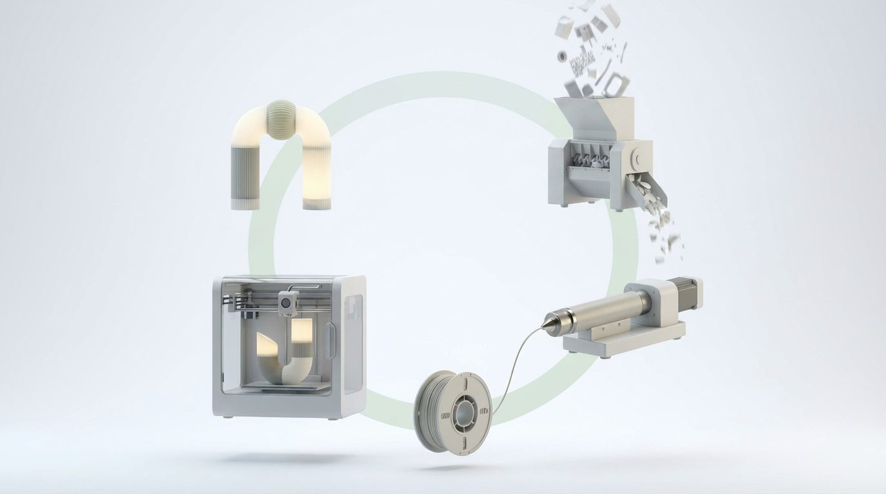
Project overview
Designing the system behind the object.
3D printing, shredding, extrusion, recycled filament, CAD, electronics, Arduino/control systems, and documentation.
A circular production system connected to Sol Seven Studios, translating waste and failed prints into usable material for designed products.
The problem
Plastic waste is treated like a logistics problem, but designers meet it as a material problem.
Failed prints, purge material, support structures, packaging, and offcuts often leave the studio as low-value waste. Traditional recycling systems are centralized, opaque, and disconnected from the decisions that create waste in the first place.
PlastiVista reframes that gap. Instead of sending material away and hoping it becomes useful again, the project keeps the material visible inside the design process. Waste becomes inventory. Failed prints become feedstock. Material mistakes become tests that can move back through the system.
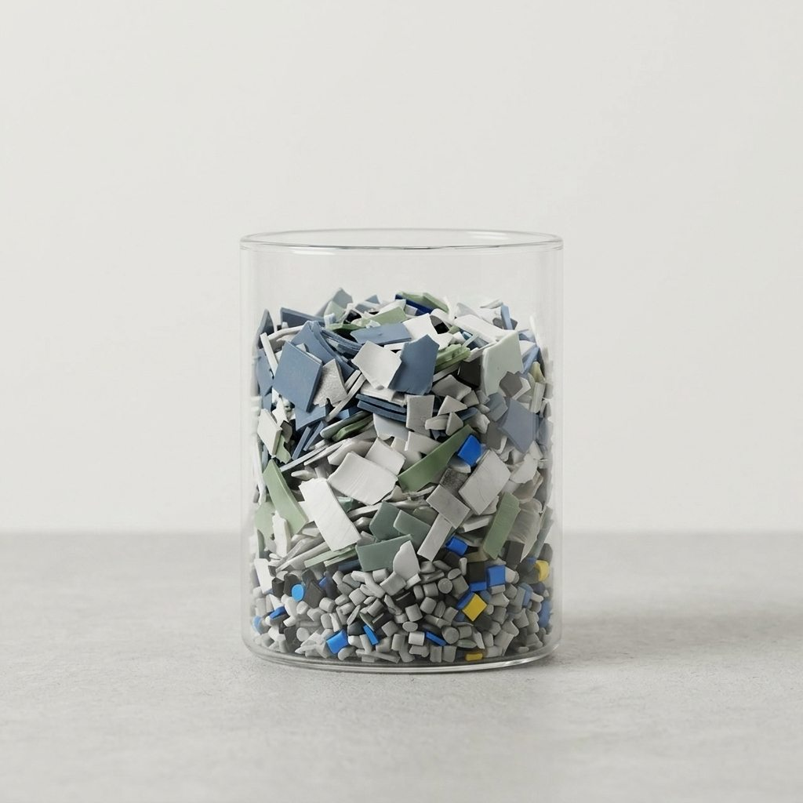
The system
A local loop for circular production.
The project maps a complete material path from collection to product and back again. Each step is both a machine interaction and a design decision.
01
Waste
Failed prints, scraps, and plastic offcuts enter the loop.
02
Shred
Material is reduced into consistent flakes for processing.
03
Extrude
Flakes are heated, pushed, and stabilized into a continuous line.
04
Filament
Recycled material becomes printable stock for the studio.
05
Print
Parts, tests, and products move from CAD into physical form.
06
Product
Sol Seven Studios becomes the visible expression of the loop.
07
Reprocess
Offcuts and failed tests return to the beginning.
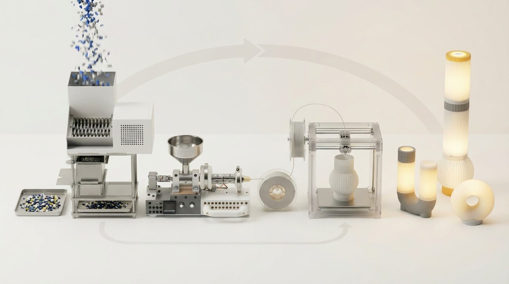
Hardware and fabrication
Built as infrastructure, not just a presentation model.
PlastiVista was developed through physical fabrication: metal hardware, 3D printed parts, machine enclosures, extrusion tests, wiring, and shop-floor iteration. The project lives in the gap between industrial design language and real fabrication constraints.
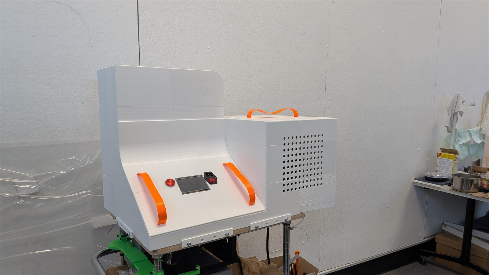

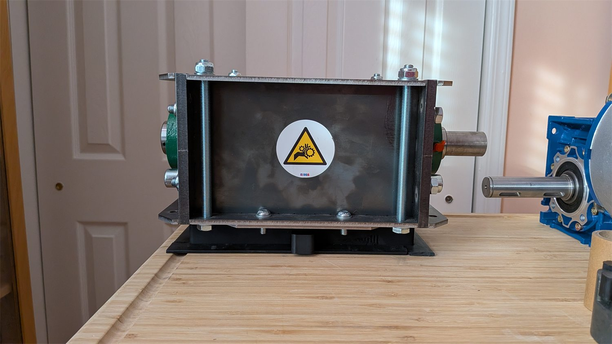
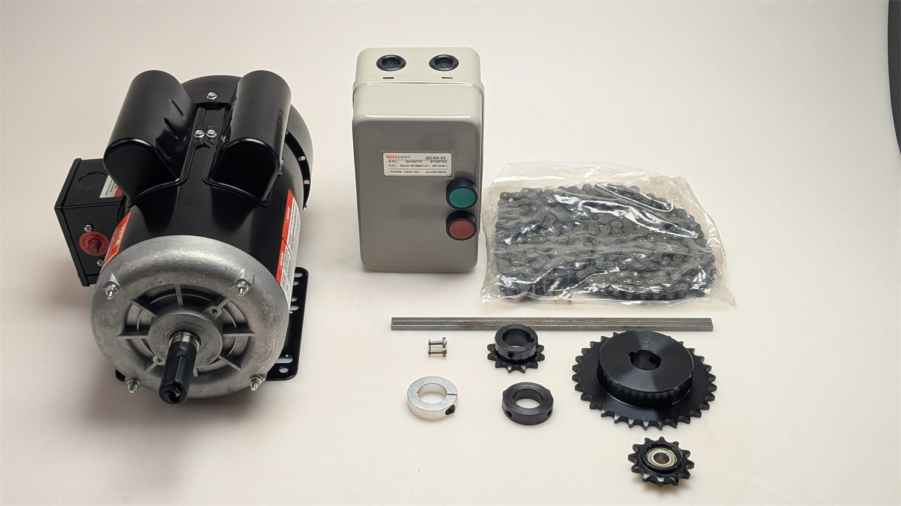

Electronics and control
The engineering layer makes the loop repeatable.
The system depends on control more than appearance. Motors, relays, power delivery, heat control, switches, and interface decisions determine whether material can be processed consistently enough to become product-grade stock.
This layer turns PlastiVista from a concept image into working infrastructure: a machine that can be started, tuned, observed, repaired, and improved.
Heat and extrusion behavior are treated as a controlled material process.
Relays, switches, fans, and power routing shape the system's reliability.
A touchscreen and physical controls make the machine legible during use.
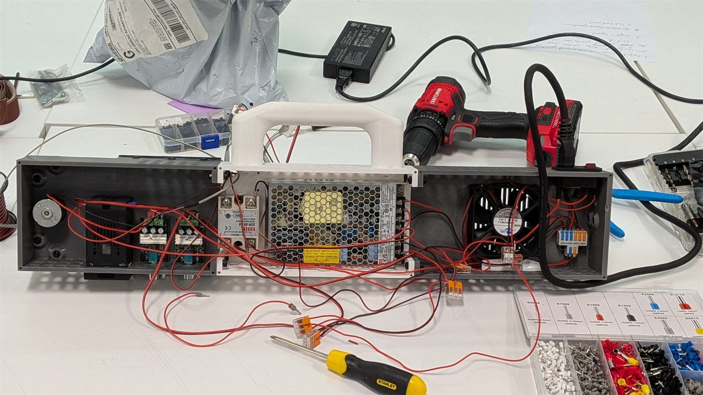


Material testing
Experiments, failed prints, and usable material.
The material story is intentionally process-driven. PlastiVista treats each failed print, shred size, extrusion attempt, and print test as feedback for the next pass through the loop.
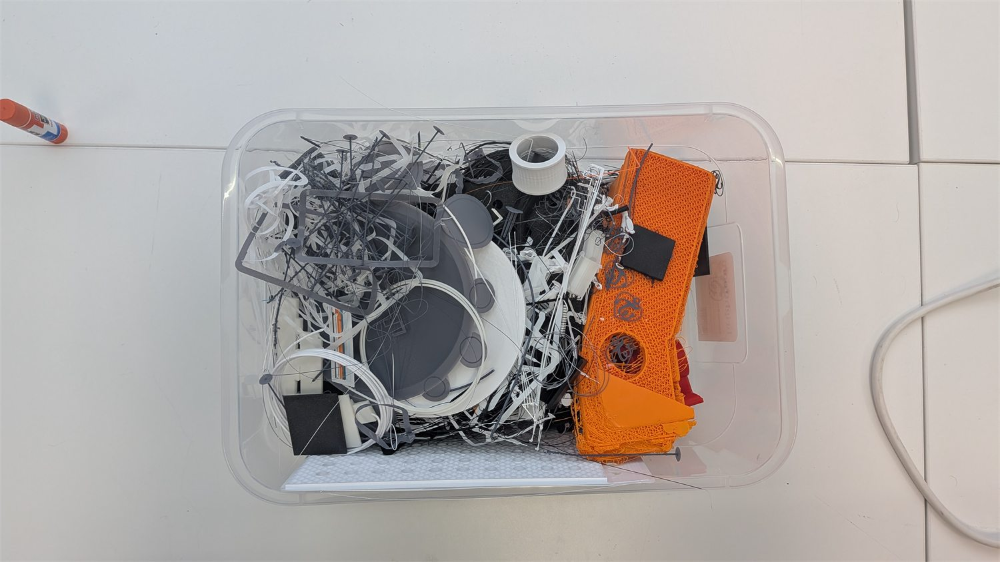

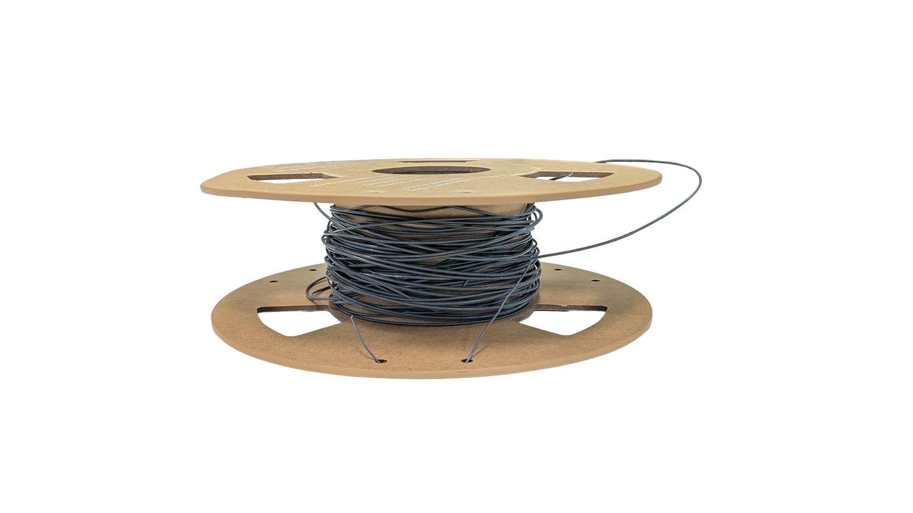

PlastiVista powers the material loop behind Sol Seven Studios.
Connection to Sol Seven Studios
Sol is the product-facing expression. PlastiVista is the infrastructure.
Sol Seven Studios focuses on lamps, modularity, product language, and human factors. PlastiVista sits underneath that work as the circular manufacturing system that makes the material story operational.
Together, they form a complete portfolio narrative: not only what the product looks like, but how it can be made, remade, repaired, and returned to a loop.
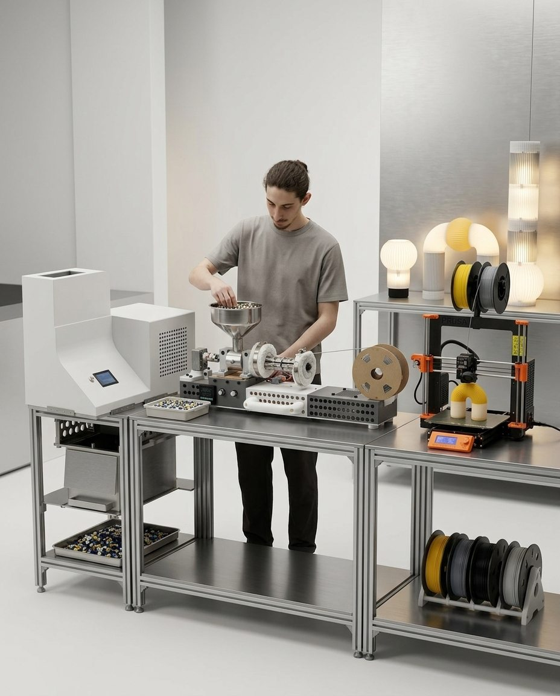
Final outcome and vision
Local circular manufacturing as a design language.
PlastiVista proposes a scalable model for studios, schools, and small manufacturers that want more control over their material loop. The value is not only environmental. It is creative, educational, and infrastructural: design decisions become connected to material consequences.
The project closes the distance between design, engineering, and fabrication. It shows that circularity can be built into the workflow, not added as a claim after the product is finished.
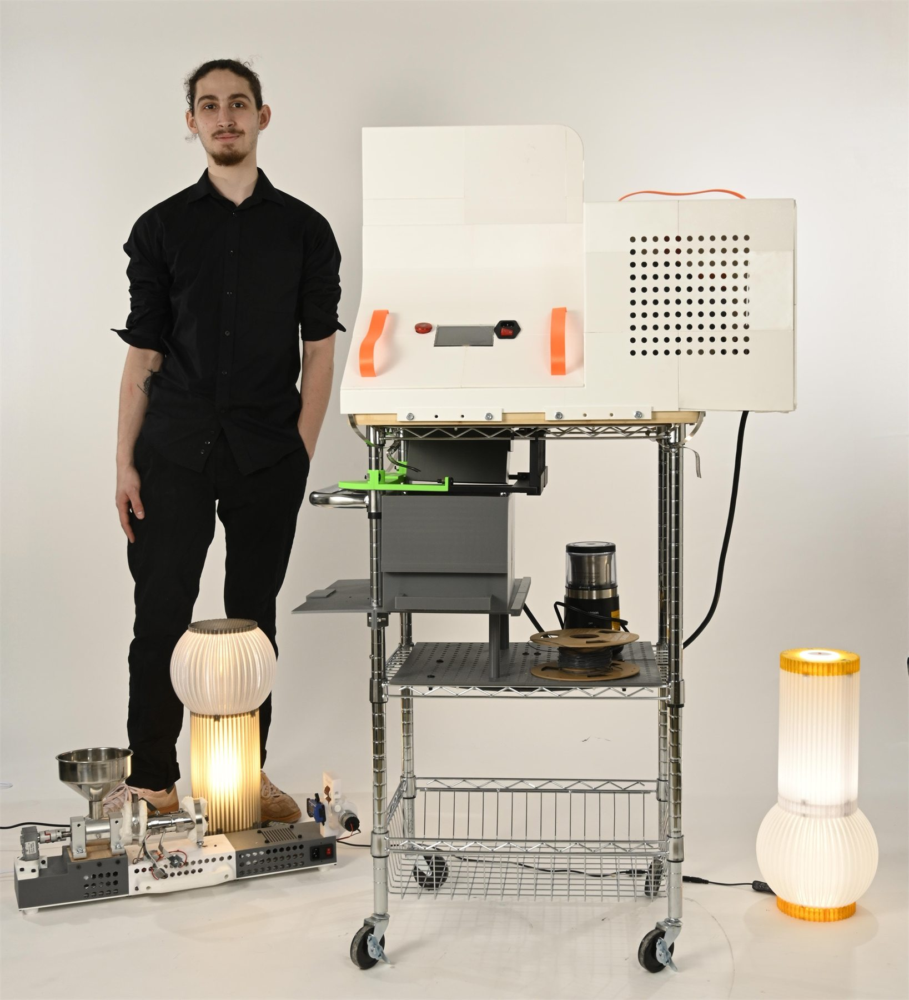